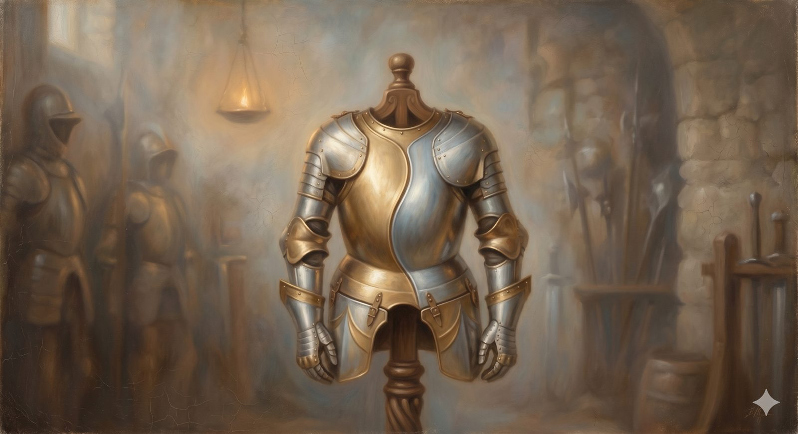

The Chalcedonian Definition
The breastplate forged at Chalcedon — fully God and fully man, one person in two natures, without confusion or division.
"...the Word became flesh and dwelt among us..." John 1:14 (ESV)
The next weapon is a breastplate — armor that protects the very center, the heart of who Christ is. The Chalcedonian Definition of 451 was forged once the church had settled that Jesus is fully God, when a harder question pressed in from the opposite side: granting his full deity, how can he also be genuinely, fully human? Two errors pushed from opposite directions, and the Definition was hammered out to guard against both at once.
The Chalcedonian Definition · 451 AD (condensed)
Following the holy fathers, we all with one voice confess our Lord Jesus Christ to be one and the same Son, the same perfect in Godhead and the same perfect in manhood, truly God and truly man … of one substance with the Father as regards his Godhead, and the same of one substance with us as regards his manhood … acknowledged in two natures, without confusion, without change, without division, without separation; the difference of the natures being in no way abolished because of the union, but rather the characteristic property of each nature being preserved, and concurring into one Person and one hypostasis.
The battleTwo errors, from opposite sides
One error blurred the two natures together into a kind of third thing — a divine-human hybrid that was neither quite God nor quite man, the humanity swallowed up by the divinity like a drop of wine in the sea. The other split him down the middle into two persons loosely sharing one body, so that the man Jesus and the divine Son became, in effect, two separate subjects. Both wrecked the gospel from a different angle, because the one who saves us had to be fully God — or he could not save — and fully one of us — or he could not stand in our place.
The Definition answered not by explaining how the union works — the church never claimed to comprehend that mystery — but by fencing it on every side with four great negatives. The two natures are joined in one person without confusion and without change (they are not blended, and neither loses what belongs to it — the divine does not become mortal, the human does not become all-knowing); and without division and without separation (yet he is not two beings loosely paired, but one Person, genuinely and permanently). Fully God, fully man, one Christ.
In plain terms
Once you grant Jesus is fully God, the next puzzle is how he can also be truly human. Chalcedon's answer: he is one person with two complete natures — not a blend, not a split, but both fully present in one Lord.
The four "withouts" are guardrails. They don't explain the mystery; they fence off the four ways people kept getting it wrong.
Why it is a breastplateThe gospel's own heart
This is not hair-splitting; it is the hinge on which salvation swings, which is why it is armor for the heart rather than a tool for the hand. Lose his full divinity and the cross is merely a tragic human death that saves no one. Lose his full humanity and he cannot represent us, cannot stand where we stand, cannot be the second Adam who obeys in our place. The pastoral comfort of the whole New Testament — that we have a high priest who was tempted in every way as we are, yet without sin — depends on both natures being real and whole. Chalcedon keeps them both nailed down, and so keeps the heart of the gospel safe.
Fully God, or he could not save us. Fully one of us, or he could not stand in our place. Chalcedon keeps both.
One weapon remains in this room — the most relentless of them all, which does not merely guard one point but states the whole faith with such unbroken precision that it leaves no crack anywhere for error to slip through.